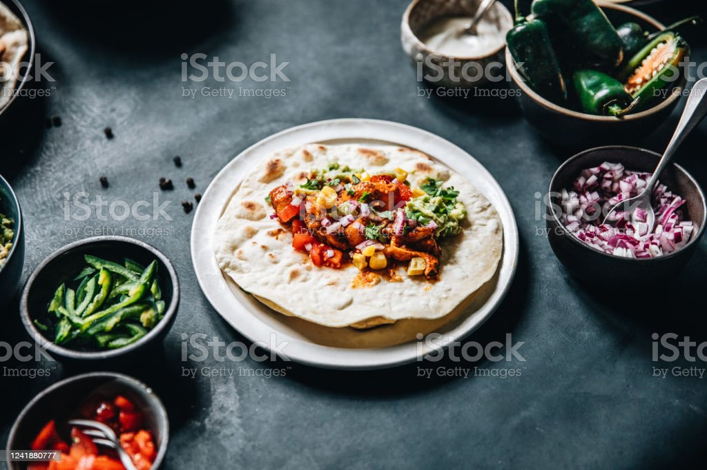

GURASA

INGREDIENTS
- flour
- water
- suger
- yeast
- salt
STEPS
- Add all the dry ingredients in a bowl and mix, addng a little cold water
- Make sure the dough is thick
- Press and stretch the dough and then cover it and place in a warm place for an hour
- Now heat a non-sticky pan